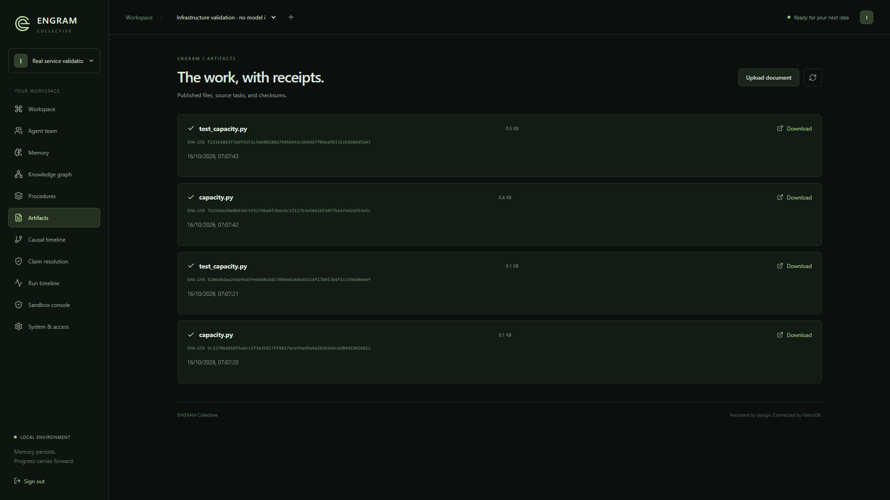
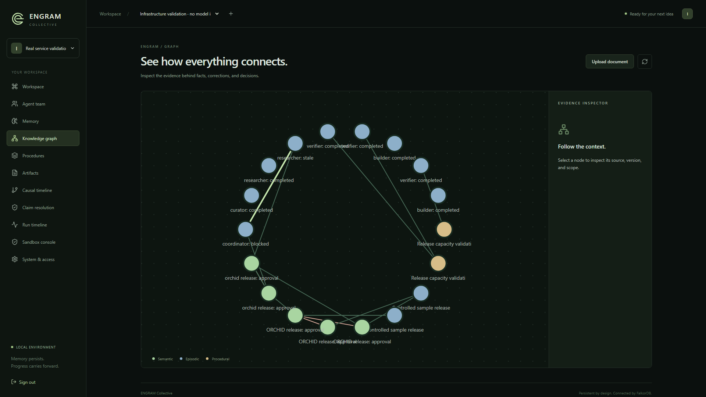

08 / Durable context
The next session
starts ahead.
01
PostgreSQL
STATEConversations · Tasks · Checkpoints
02
FalkorDB
CONTEXTRelationships · Causal dependencies
03
Qdrant + Mem0
FACTSExtraction · Semantic memory
04
Local embeddings
RECALLGGUF · Retrieval
RESTART
SESSION NSESSION N+1


Restart checks passed
2 sessions · 4 files · 3 checkpoint threads
Separate live and infrastructure fixtures